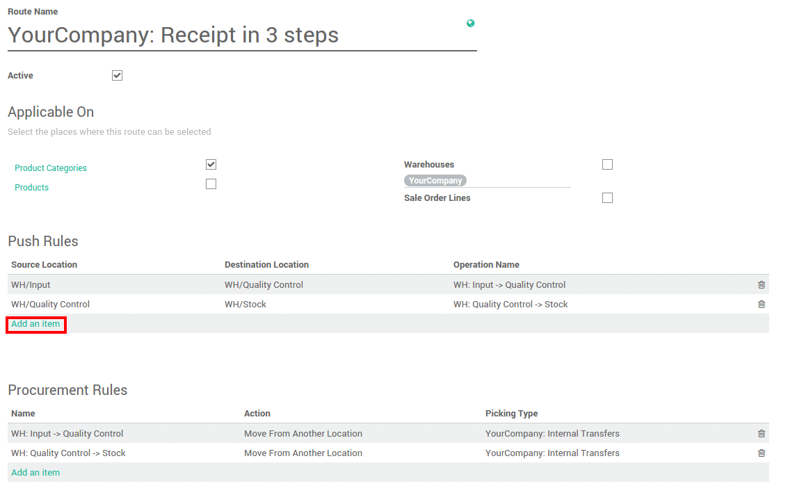
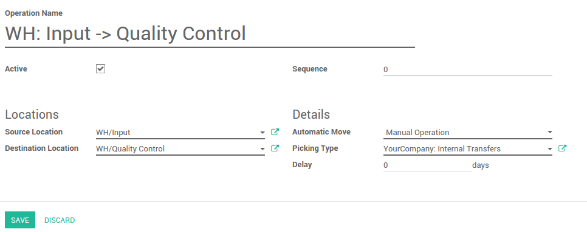
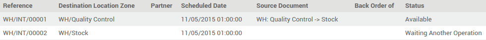

Overview
The push system of inventory control involves forecasting inventory needs to meet customer demand. Companies must predict which products customers will purchase along with determining what quantity of goods will be purchased. The company will in turn produce enough product to meet the forecast demand and sell, or push, the goods to the consumer. Disadvantages of the push inventory control system are that forecasts are often inaccurate as sales can be unpredictable and vary from one year to the next. Another problem with push inventory control systems is that if too much product is left in inventory. This increases the company's costs for storing these goods. An advantage to the push system is that the company is fairly assured it will have enough product on hand to complete customer orders, preventing the inability to meet customer demand for the product.
A push flow indicates how locations are chained with the other ones. As soon as a given quantity of products is moved in the source location, a chained move is automatically foreseen according to the parameters set on the flow specification (destination location, delay, type of move, journal). It can be triggered automatically or manually.
Configuration
Push rules are part of the routes. Go to the menu and tick Advance routing of products using rules.

Push rules settings
The push rules are set on the routes. Go to .
In the push rule section, click on Add an item.
Here you can set the conditions of your rule. In this example, when a good is in Input location, it needs to be moved to the quality control. In the 3 steps receipts, another push rule will make the goods that are in the quality control location move to the stock.
Try to create a push rule in our demo instance.Note
Some warehouse configuration creates routes with push rules already defined.
Stock transfers
The push rule will trigger stock transfer. According to the rule set on your route, you will see that some transfers might be ready and other are waiting.
The push rule that was set above will create moves from WH/Input location to the WH/Quality Control location.
In this example, another move is waiting according to the second push rule, it defines that when the quality control is done, the goods will be moved to the main stock.